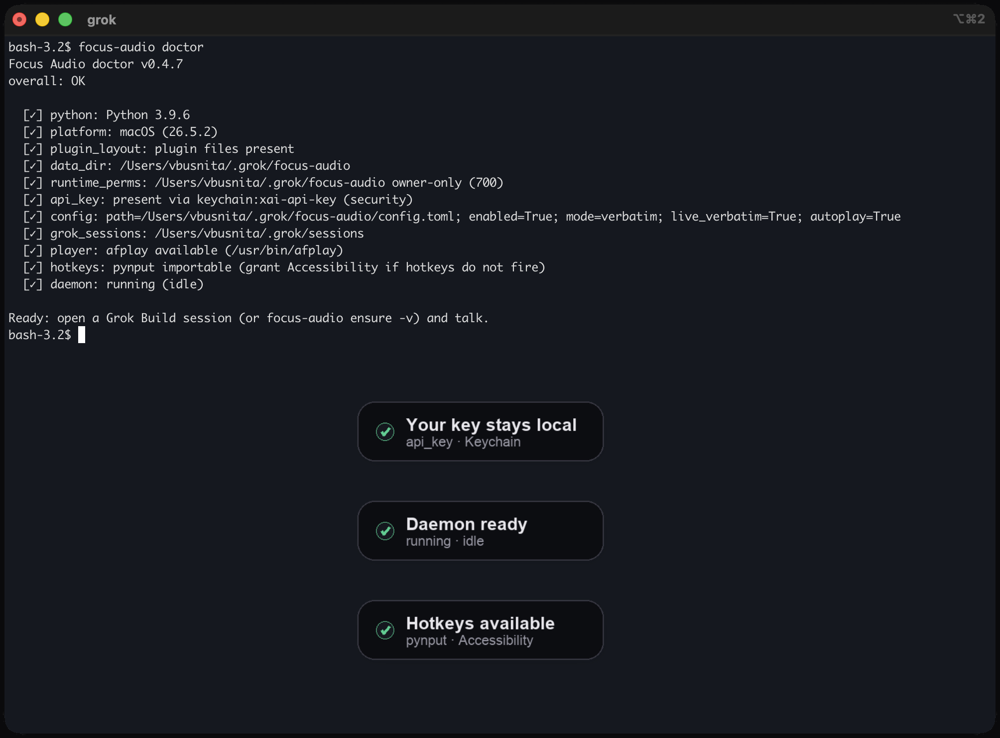
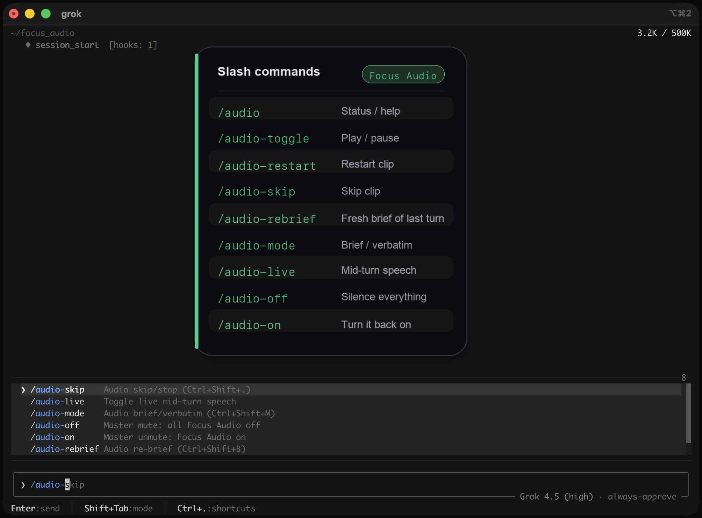

Brief
Default short recap: what happened, what changed, what to do next.
Grok Build plugin · macOS
Focus Audio speaks a short recap when a turn finishes — or mid-turn if you want live speech — using your xAI API key. Nothing is billed through this project.
Default short recap: what happened, what changed, what to do next.
Full reply cleaned for speech. Big code blocks become short placeholders.
Optional mid-turn speech while the agent is still writing.
Play/pause, skip, rebrief, mode toggle — hotkeys or slash commands.
A real session clip, a clean focus-audio doctor run, and the slash-command surface.


Requires Accessibility for the Terminal or Python host that runs Grok.
About five minutes. Full steps and privacy notes live in the repo README.
git clone https://github.com/vbusnita/focus-audio.git
cd focus-audio
chmod +x bin/focus-audio
grok plugin install . --trust
focus-audio doctor
Add your xAI API key (Keychain service xai-api-key or XAI_API_KEY).
Open a new Grok Build session so hooks load.
Speech and brief rewrite call xAI with your key. Focus Audio does not ship a shared key or send analytics to the author. Prefer brief over live+verbatim when you want less raw text leaving the Mac.
SECURITY.md